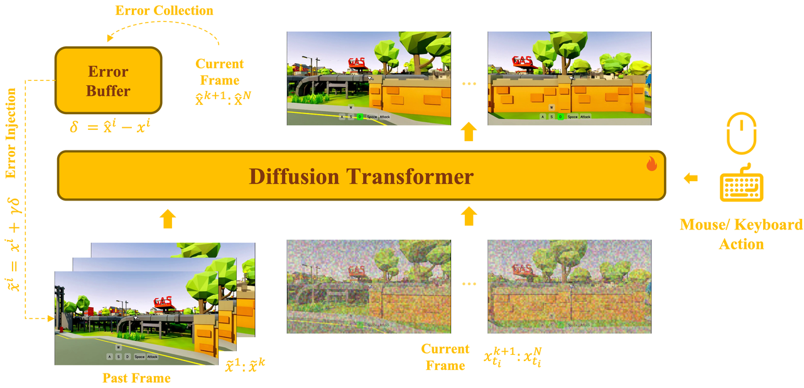
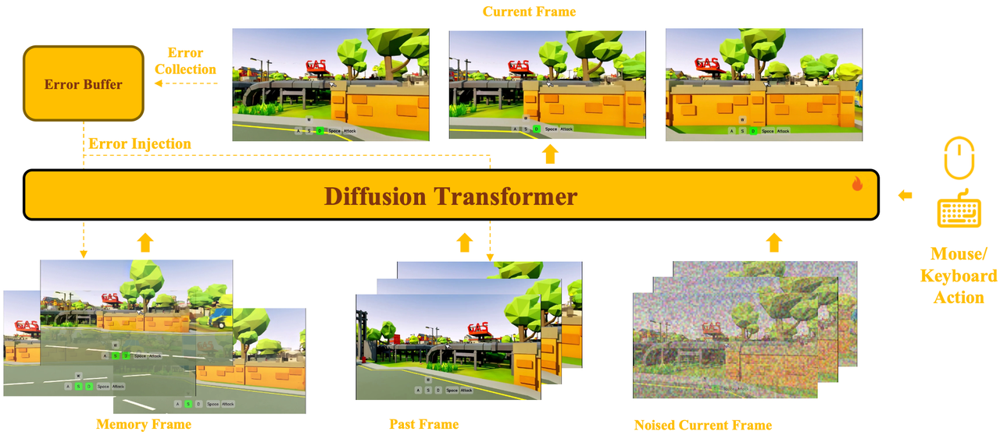
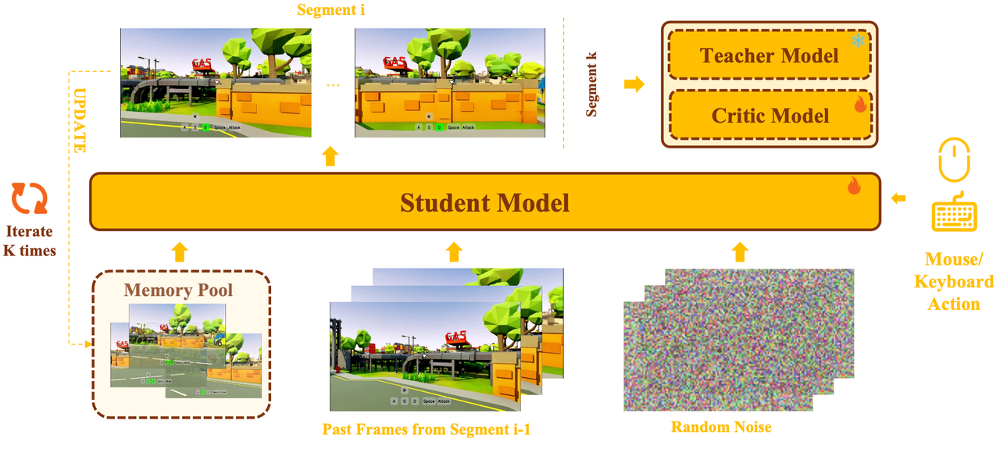

Real-Time and Streaming Interactive World Model with Long-Horizon Memory
Skywork AI
With the advancement of interactive video generation, diffusion models have increasingly demonstrated their potential as world models. However, existing approaches still struggle to simultaneously achieve memory-enabled long-term temporal consistency and high-resolution real-time generation, limiting their applicability in real-world scenarios. To address this, we present Matrix-Game 3.0, a memory-augmented interactive world model designed for 720p real-time long-form video generation. Building upon Matrix-Game 2.0, we introduce systematic improvements across data, model, and inference. First, we develop an upgraded industrial-scale infinite data engine that integrates Unreal Engine-based synthetic data, large-scale automated collection from AAA games, and real-world video augmentation to produce high-quality Video-Pose-Action-Prompt quadruplet data at scale. Second, we propose a training framework for long-horizon consistency: by modeling prediction residuals and re-injecting imperfect generated frames during training, the base model learns self-correction; meanwhile, camera-aware memory retrieval and injection enable the base model to achieve long horizon spatiotemporal consistency. Third, we design a multi-segment autoregressive distillation strategy based on Distribution Matching Distillation (DMD), combined with model quantization and VAE decoder distillation, to achieve efficient real-time inference. Experimental results show that Matrix-Game 3.0 achieves up to 40 FPS real-time generation at 720p resolution with a 5B model, while maintaining stable memory consistency over minute-long sequences. Scaling up to a 2×14B model further improves generation quality, dynamics, and generalization. Our approach provides a practical pathway toward industrial-scale deployable world models.
Matrix-Game 3.0 consists of four tightly coupled components: (1) an error-aware interactive base model ensuring accurate action controllability and long-horizon consistency; (2) a camera-aware long-horizon memory mechanism for robust spatiotemporal memory; (3) a training–inference aligned few-step distillation pipeline for stable few-step generation; and (4) a real-time inference acceleration module achieving up to 40 FPS at 720p.
The base model uses a unified bidirectional architecture for both multi-step and few-step mode, jointly modeling past latent frames, noised current frames, and action conditions within a single Diffusion Transformer. Error collection and error injection simulate imperfect conditioning, enabling the model to learn self-correction for autoregressive long-horizon rollouts.

To maintain consistency over minute-long sequences, the model employs a joint self-attention mechanism that places retrieved memory latents, recent history latents, and current prediction latents into the same attention space, so that the model can exchange information across different temporal scales within a single denoising hierarchy.
Camera-aware memory selection retrieves only view-relevant historical content based on camera pose and field-of-view overlap, accompanied by relative Plücker encoding to explicitly represent cross-view geometry. A persistent sink latent (the first frame) provides a stable global anchor for scene style and appearance across the full rollout.
Error collection and injection are applied to the full conditioning context—both memory and history—to bridge the gap between ground-truth training conditions and the imperfect contexts encountered during autoregressive inference.

We introduce a multi-segment self-generated inference scheme for the bidirectional student, based on Distribution Matching Distillation (DMD). Instead of using ground-truth frames as history (which creates training–inference mismatch), the student performs multi-segment rollouts that mimic actual few-step inference: each segment starts from random noise, with past frames taken from the tail of the previous segment and memory retrieved from an online-updated memory pool.
Combined with INT8 quantization for the DiT attention layers, a lightweight pruned VAE decoder (LightVAE, up to 5.2× speedup), and GPU-based camera-aware memory retrieval, the system achieves up to 40 FPS real-time generation at 720p resolution using 8 GPUs for DiT inference and 1 GPU for VAE decoding.

Interactive 30-second video generation showcasing the base memory-augmented model across diverse game scenes.
Matrix-Game 3.0 demonstrates highly consistent long-horizon memory by generating 1-minute coherent diverse videos.
Matrix-Game 3.0 distilled to a 3-step model provides ultra-fast real-time rendering capabilities while maintaining visual fidelity.
Long-horizon 1-minute generation achieved at ultra-fast speeds using the 3-step distilled model.
We would like to express our gratitude to:
We are grateful to the broader research community for their open exploration and contributions to the field of interactive world generation.
}